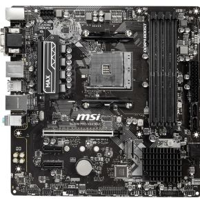

Daily Motherboard #7
MSI B450M PRO-VDH MAX
- Brand: MSI
- Form Factor: Micro-ATX
- Chipset: AMD B450
- Memory slots: 4x
- Memory type: DDR4
- Memory speed: 1866 MHz, 2133 MHz, 2400 MHz, 2667 MHz, 2800 MHz, 2933 MHz, 3000 MHz, 3066 MHz, 3200 MHz, 3466 MHz, 3733 MHz, 3866 MHz
- SATA-3 6Gbps: 4x
- Socket: AM4
- PCI Express x1 slots: 2x
- PCI Express x16 slots: 1x
Memory stuff
idk stuff
PCIE stuff
My opinion: Does it have a VGA cable?
Tweakers rating: ⭐⭐⭐.5/3 reviews Source
Source